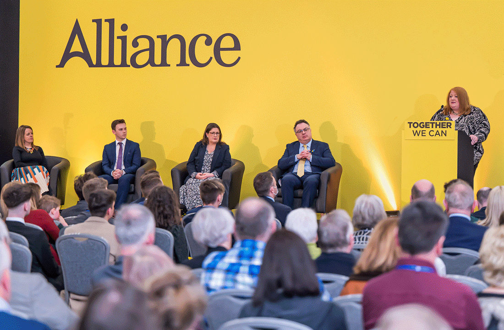

Britania Raya
Britania Raya
Alliance Party : Bersama Kita Bisa
Lebih baik itu mungkin, tetapi itu tidak bisa dihindari» Tentang Kami «

Alliance merupakan sebuah organisasi dengan tujuan untuk menyembuhkan perpecahan-perpecahan pahit yang ada di dalam komunitas kami. Kami percaya pada masyarakat bersama agar bebas dari intimidasi, diskriminasi dan ketakutan, dimana setiap orang aman, dapat memainkan peran mereka dan diperlakukan dengan adil dan hormat. Dengan begitu, organisasi kami ini Alliance didirikan.
» Sejarah «

Partai Aliansi didirikan pada tanggal 21 April 1970. Banyak anggota pendiri yang sebelumnya terlibat dengan Gerakan Ulster Baru, sebuah kelompok penekan yang didirikan pada tahun 1969 untuk mempromosikan kebijakan moderat dan non-sektarian. Dua anggota terkemuka NUM, Oliver Napier dan Bob Cooper, memutuskan bahwa sebuah partai lintas-komunitas baru akan mewakili alternatif terbaik dari partai-partai mapan yang tidak berubah selama lima puluh tahun sebelumnya. Napier dan Cooper menjadi co-pemimpin Aliansi, mereka adalah bagian dari 'Kelompok 16' yang mendirikan partai baru, anggota pendiri terkemuka lainnya termasuk Basil Glass, Robin Glendinning, Denis Loretto dan Jim Hendron.
Prinsip-prinsip pendirian Partai Aliansi pada tahun 1970 termasuk penyembuhan perpecahan komunitas di Irlandia Utara, dukungan untuk Majelis lokal yang didevolusikan, komitmen terhadap supremasi hukum dan mengadopsi pendekatan liberal terhadap masalah sosial dan ekonomi yang sering diabaikan oleh partai lain di berpihak pada yang konstitusional.
Pada tahun-tahun berikutnya sejumlah politisi bergabung dengan Aliansi dari berbagai perbedaan politik, seperti Phelim O'Neill, Bertie McConnell dan Tom Gormley di Stormont, dan anggota parlemen Westminster untuk North Belfast Stratton Mills. Menyusul penghapusan Parlemen Irlandia Utara pada tahun 1972, Alliance mengusulkan Majelis baru yang dipilih melalui Single Transferable Vote dan Eksekutif pembagian kekuasaan terpilih, yang sebagian besar tercermin melalui Majelis 1973-74 yang berumur pendek yang memiliki delapan anggota Aliansi. Mengikuti Perjanjian Sunningdale, Alliance bergabung dengan Eksekutif pembagian kekuasaan pertama pada tahun 1974, dengan ketua partai Oliver Napier menjabat sebagai Menteri Hukum dan Kepala Kantor Reformasi Hukum, dan wakil ketua Bob Cooper menjabat sebagai Menteri Layanan Tenaga Kerja. Alliance juga memiliki delapan anggota yang dipilih untuk Konvensi Konstitusi 1975.
Oliver Napier menjabat sebagai pemimpin Aliansi dari tahun 1972 hingga 1984, selama itu partai tersebut memiliki tiga wakil pemimpin, Bob Cooper (1973-76), Basil Glass (1976-80) dan David Cook (1980-84). Selama ini Aliansi melakukan pemungutan suara dengan sangat baik pada pemilihan pemerintah daerah tahun 1973 dan 1977, memastikan terpilihnya beberapa Walikota Aliansi, seperti Ivor Canavan sebagai Walikota Derry/Londonderry pada tahun 1975-76, dan David Cook sebagai Walikota Belfast pada tahun 1978- 79, satu-satunya Wali Kota non-serikat dari tahun 1898 hingga 1997.
Meskipun polarisasi meningkat pada akhir 1970-an dan awal 1980-an, Aliansi terus memainkan peran konstruktif, termasuk di Majelis 1982-86 yang memiliki sepuluh anggota Aliansi. Pada tahun 1984 John Cushnahan menjadi ketua partai, dan Addie Morrow menjadi wakil ketua. Periode ini ditentukan oleh oposisi serikat pekerja terhadap Perjanjian Anglo-Irlandia, yang mencakup boikot rapat dewan. Anggota dewan aliansi seperti David Cook (Belfast), Seamus Close (Lisburn) dan Addie Morrow (Castlereagh) berhasil menantang boikot ini untuk memastikan pemerintah daerah terus beroperasi secara efektif.
John Alderdice menjabat sebagai pemimpin Aliansi dari tahun 1987 hingga 1998, sementara Gordon Mawhinney (1987-91) dan Seamus Close (1991-2001) menjabat sebagai wakil pemimpin. Tahun 1990-an Aliansi berpartisipasi dalam negosiasi yang menghasilkan Perjanjian Jumat Agung. Dalam dokumennya Aliansi 'Mengatur dengan Persetujuan' mengusulkan sebuah Majelis dengan lima anggota untuk setiap daerah pemilihan, dipilih melalui STV, yang akan bertanggung jawab atas berbagai masalah yang dipindahkan dari Westminster. Eksekutif akan menjadi koalisi sukarela yang dipilih dengan suara mayoritas yang memenuhi syarat, untuk memastikan beberapa masukan dari serikat pekerja dan nasionalis tanpa mengecualikan partai lintas komunitas. Banyak dari ini dimasukkan ke dalam Perjanjian Jumat Agung, namun Alliance menyoroti kekhawatiran seputar aspek-aspek lain dari Perjanjian yang berpotensi melembagakan perpecahan sektarian,
Alliance mendukung Perjanjian Jumat Agung dan mengkampanyekannya dalam referendum berikutnya yang didukung oleh 71,1% pemilih di Irlandia Utara. Alliance memperoleh enam kursi dalam pemilihan Majelis 1998, John Alderdice (Belfast Timur), Seamus Close (Lembah Lagan), Séan Neeson (Antrim Timur), David Ford (Antrim Selatan), Kieran McCarthy (Strangford) dan Eileen Bell (North Down) . Alderdice, yang diangkat ke House of Lords pada tahun 1996, menjadi Ketua Majelis yang pertama, dan Séan Neeson menggantikannya sebagai pemimpin partai dari tahun 1998 hingga 2001, ketika David Ford terpilih sebagai pemimpin dari tahun 2001 hingga 2016. Eileen Bell juga menjadi wakil pemimpin dari tahun 2001 hingga 2006, dan menjabat sebagai Ketua Majelis kedua.
» Visi Kami «
Alliance berdiri dengan tujuan untuk menghilangkan adanya perpecahan, bebas intimidasi, diskriminasi dan ketakutan, membuat semua orang aman dan dapat diperlakukan secara adil dan terhormat
Memberikan Pelayanan Publik yang Lebih BaikAlliance percaya pada Irlandia Utara yang memberikan untuk semua, dengan layanan publik yang bekerja dan meningkatkan kualitas hidup rakyat kita. Sudah terlalu lama, politik hijau dan oranye yang memecah belah telah menghambat penyampaian isu-isu yang benar-benar penting: kesehatan, pendidikan, infrastruktur, dan ekonomi. |
||
Ekonomi Hijau yang AdilKami menghadapi masalah besar: pemulihan dari pandemi, mengatasi krisis iklim, dan mengatasi lonjakan biaya hidup. Jelas bahwa ekonomi kita memperburuk ketimpangan, kemiskinan dalam pekerjaan dan degradasi lingkungan. Perlu perbaikan. Berurusan dengan masalah ini menghadirkan peluang besar untuk membangun yang baru... |
||

|
Juara Masa Depan BersamaPartai Aliansi percaya pada komunitas yang bersatu untuk Irlandia Utara. Bukan narasi 'dua komunitas' yang dipromosikan oleh sebagian besar partai lain, tetapi visi semua orang di Irlandia Utara bersatu demi kemajuan masyarakat secara keseluruhan. Kami percaya pada Irlandia Utara di mana manfaat hidup... |
|
Ciptakan Masyarakat ProgresifAlliance sangat liberal, progresif, dan internasionalis dalam politiknya. Perwakilan terpilih kami akan selalu memperjuangkan pesan yang positif, inklusif, dan pro-keberagaman. Kami ingin membangun Irlandia Utara baru yang mencerminkan nilai-nilai ini dan terbuka serta menyambut semua orang. |
||
» Kegiatan «
| Mempromosikan Ideologi dan Prinsip | Melalui situs web ini kami menyajikan berbagai informasi tentang manifesto, visi dan misi, dan tujuan-tujuan partai. | |
|---|---|---|
| Memberikan Informasi | Disini kami memberikan informasi tentang berbagai kegiatan seperti konferensi, pertemuan, dan acara kampanye. Hal ini bertujuan untuk memperkuat dukungan masyarakat dan meningkatkan partisipasi anggota. | |
| Mengumpulkan Dana | Melalui fitur donasi online dalam website ini dapat memudahkan para pendukung partai untuk memberikan sumbangan ke partai. | |
| Menyediakan Sumber Daya | Dengan memberikan berita terbaru mengenai perkembangan politik ini dapat membantu para pengunjung situs untuk memahami isu-isu politik terkini dan memperoleh pandangan terkait isu-isu tersebut. | |
| Menyediakan Berita Terkini | Dengan banyaknya sumber daya seperti dokumen, publikasi, dan laporan partai yang dapat diunduh oleh para pengunjung. Hal ini membantu para pendukung partai dan masyarakat umum untuk memahami lebih dalam tentang kegiatan partai. | |
| Meningkatkan Partisipasi Anggota | Kami meningkatkan partisipasi anggota partai dengan menyediakan halaman khusus untuk diskusi dan memberikan masukan kepada partai. Hal ini membantu partai untuk mendengarkan suara anggotanya dan meningkatkan keterlibatan mereka dalam kegiatan partai. | |
| Menyediakan Informasi Kontak | Melalui website ini kami menyediakan informasi kontak seperti alamat kantor dan nomor telepon, sehingga para pengunjung dapat menghubungi partai jika diperlukan. Hal ini memudahkan masyarakat umum untuk terhubung dengan partai dan memberikan masukan atau bertanya tentang kegiatan partai. | |
| Menyediakan Forum untuk Diskusi dan Pertukaran Pendapat | Tersedianya forum bagi para pengunjung situs untuk berdiskusi dan bertukar pendapat agar dapat membantu kami untuk memahami pandangan dan masukan dari masyarakat umum. | |
| Menyajikan Profil Para Memegang Jabatan di Pemerintahan | Kami juga menyajikan profil para anggota yang terpilih atau memegang jabatan di pemerintahan. Hal ini memberikan informasi kepada masyarakat umum tentang tokoh-tokoh penting dalam partai dan pemerintahan. | |
| Mengajak untuk Bergabung Menjadi Anggota Partai atau Relawan Kampanye | Kami mengajak para pengunjung situs untuk bergabung menjadi anggota atau relawan kampanye. Dengan begitu dapat meningkatkan jumlah anggota dan relawan kampanye, sehingga dapat membuat organisasi lebih efektif dalam mengatur dan menyediakan fasilitas terhadap publik. |